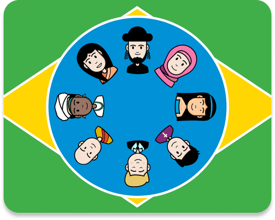

Intolerância Religiosa
A intolerância religiosa é um tema que tem chamado a atenção
nos últimos anos, especialmente diante do aumento de casos de
violência e discriminação contra minorias religiosas. Apesar
de ser um problema antigo, a intolerância religiosa ainda
persiste em nossa sociedade e merece atenção e discussão.
Causas, Consequências e Soluções
A intolerância religiosa é um problema que ocorre em diferentes
partes do mundo, incluindo o Brasil. A sociedade brasileira é
conhecida por sua diversidade cultural e religiosa, abrigando
uma ampla gama de crenças e práticas religiosas. No entanto,
infelizmente, também existem casos de intolerância religiosa no
país.

https://www.al.sp.gov.br/repositorio/noticia/N-01-2021/fg259921.jpg
Causas: A intolerância religiosa pode ter várias causas,
incluindo:
Ignorância: A falta de compreensão e conhecimento sobre outras religiões pode levar a preconceitos e estereótipos que alimentam a intolerância religiosa.
Fanatismo religioso: O fanatismo religioso pode levar a uma visão extremista da própria religião, que não permite a aceitação ou respeito pelas crenças de outras pessoas.
Conflitos políticos ou econômicos: Em algumas situações, conflitos políticos ou econômicos podem ser mascarados como conflitos religiosos, levando a um aumento da intolerância religiosa.
Histórico de violência e discriminação: Em algumas sociedades, a intolerância religiosa pode ser enraizada em históricos de violência e discriminação religiosa.
Influências culturais: Em alguns casos, crenças e valores culturais podem levar a uma visão negativa de outras religiões e, consequentemente, à intolerância.
Problemas de identidade: Em alguns casos, indivíduos podem sentir uma ameaça à sua própria identidade religiosa ao entrar em contato com outras religiões, o que pode levar à intolerância.
Extremismo político: Algumas ideologias políticas extremistas podem usar a religião como uma ferramenta para promover sua agenda política, o que pode levar à intolerância religiosa.
A intolerância religiosa pode ter graves consequências para as pessoas e para a sociedade como um todo, como a perda de direitos, a violência física e psicológica e a polarização social. É importante mostrar como a intolerância religiosa afeta não apenas as vítimas diretas, mas também a convivência pacífica entre diferentes grupos religiosos. Podemos solucionar a Intolerância Religiosa visando a educação para o diálogo inter-religioso, o fortalecimento da legislação de combate à discriminação e o engajamento de líderes religiosos na promoção da tolerância, e mais projetos e trabalhos nas escolas, para instigar aos alunos á procurarem e pesquisarem sobre cada religião. É importante lembrar também que a Intolerância Religiosa deve ser solucionada como um todo, começando em casa e na escola, e partindo assim para a sociedade.

K
L
D
NEWS
2023 oficial - 2º informática
SOBRE
CONTATO
REDES SOCIAIS
Telefone:
(xx)xxxxx-xxxx
Email:
kimlindodiaN@gmail.com


Ciências Humanas e
Sociais Aplicadas. https://www.al.sp.gov.br/repositorio/noticia/N-05-2018/fg223862.jpg